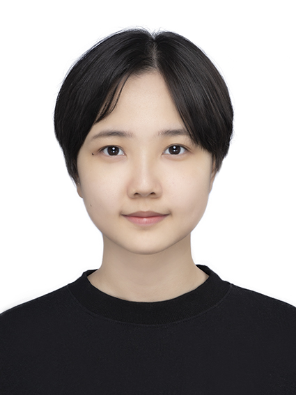
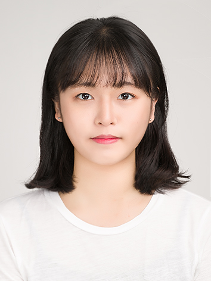
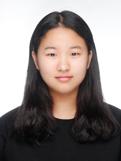
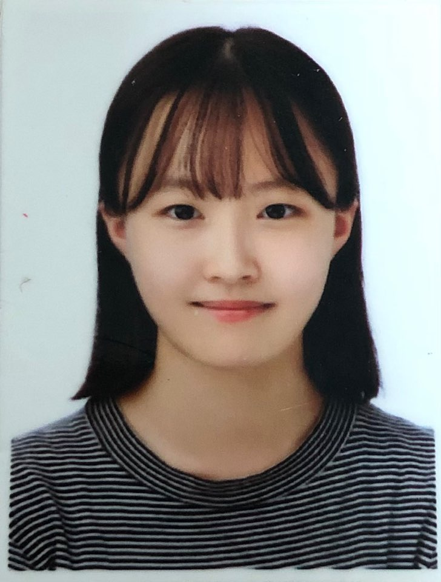
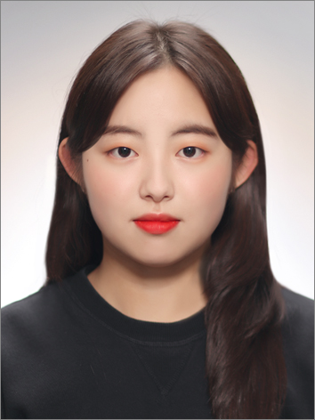

| 제46기 실무국원 | |
|  | 제46기 실무국장 이준위 |
| 이번 DEBS 온라인 방송제는 실무국원이 된 후 처음 진행한 행사이자 1년 만에 준비한 행사입니다. 온라인이라는 완전히 새로운 형식을 준비해야 한다는 생각에 걱정과 부담을 가지기도 했으나, 결과적으로 이번 온라인 방송제를 무사히 개최하게 되어 정말 다행이라고 생각합니다. 명예국원 선배들의 응원과 동기들, 47기 국원들의 도움으로 무사히 행사를 개최할 수 있었습니다. 아직 많이 미숙한 실무국장을 믿고 따라준 모든 국원들에게 진심으로 감사드립니다. 차마 힘들지 않았다고는 할 수 없는 시간이었습니다. 그러나 그만큼 너무나 큰 경험이자 성장의 시간이었습니다. 저를 포함한 DEBS 국원들이 정말 오랫동안, 열심히 준비한 행사입니다. 학우분들이 즐겨주셨으면 좋겠습니다. 마지막으로 이번 방송제의 초대손님인 동덕 학우들의 정성이 담긴 공모전 영상 또한 많은 관심 가져주시길 바랍니다. | |
|  | 제46기 총무부장 이가영 |
| 안녕하세요. 제46기 제작기술부 총무부장 이가영입니다. 먼저 제43회 방송제를 개최하게 되어 영광으로 생각합니다.
개최하는 동안 가장 많이 수고한 46기 동기들과 비롯하여 정국원 수습국원들에게 감사하단 말 전하고 싶습니다. 우리가 함께가 아니었다면 개최하지 못했을 겁니다.
올해는 코로나라는 감염병으로 오프라인 개최를 못하는 게 너무 아쉬웠습니다. 하지만 그 안에서 학우분들이 어떻게 하면 행사를 더 많이 즐기실 수 있을까 내부적으로 많이 고민하였습니다. 방송국 국원들이 제작한 작품뿐만 아니라 학우분들도 제작해 주신 공모전 작품을 통해 많은 학우분들이 방송제를 즐기실 수 있으면 좋겠습니다. 많이 봐주시고 많이 즐겨주세요. |
|
|  | 제46기 제작기술부장 김원희 |
| 안녕하십니까 DEBS 제46기 제작기술부장을 맡고 있는 미디어디자인학과 2학년 김원희입니다.
코로나 사태로 인해서 1학기 때 못했던 방송제를 2학기에 온라인으로라도 하게 되어 다행이라고 생각합니다.
온라인 방송제가 처음인 만큼 사이트를 제작하고 행사를 진행하는 데에 새로운 어려움이 있었지만 이렇게 개최를 하게 되어 뿌듯하다고 생각이 듭니다. 외부에서 촬영이 힘들어도 사람이 없는 시간대를 찾아다니고 안전 수칙을 지켜가며 열심히 촬영하고 제작했습니다. 다들 바쁜 시간 쪼개가면서 열심히 만들었으니 재밌고 예쁘게 봐주셨으면 좋겠습니다. |
|
|  | 제46기 아나운서부장 보도부장 오지연 |
| DEBS 46기 아나운서부장, 보도부장 오지연입니다. 방송국 국원이 되고 처음으로 참여하는 방송국의 공식 행사입니다.
방송국의 가장 큰 행사인 만큼 모든 국원이 각자 맡은 바를 열심히 참여해 좋은 결과물을 만들 수 있었다고 생각합니다.
특히나 시대의 변화에 맞춰 새로운 플랫폼으로 행사를 진행해야 했는데 동료 실무국원들의 능력이 빛을 발했습니다. 정말 고생 많았습니다. 고맙습니다.
개인의 능력이 여전히 부족하지만, 방송국 국원들이 모두 방송국에 애정을 갖고 열심히 도와주었기에 이런 결과물을 만들어낼 수 있었습니다. 방송제는 결코 방송국 국원들만의 행사가 아닙니다. 학우분들의 참여와 관심이 완성한다고 생각합니다. 최선을 다한 방송국 국원들의 작품에 대한 따뜻한 관심과 아낌없는 격려 부탁합니다. 더불어 이번 방송제의 특별한 이벤트인 솜솜 영상 공모전으로 공개되는 학우분들의 작품도 애정이 어린 눈으로 즐겁게 시청해 주시기를 바랍니다. |
|
| 제47기 정국원 | |
| 제47기 정국원 심은보 | |
| 직접 기획하고 편집하여 진행해보는 방송제는 또 처음이라 준비하는 내내 즐거웠던 것 같았습니다.
실력이 많이 부족하여 아쉬운 부분들이 많았지만 46기 선배님들과 같이 영상을 만들며 도와준 47기 동기 예림이가 있어서 잘 마무리할 수 있었습니다.
늘 방송국 분위기를 따뜻하게 만들어주신 선배님들 덕에 더 편하고 즐기며 방송국 생활을 한 것 같습니다. 이번 방송제는 앞으로 더 노력하고 발전해서 좋은 컨텐츠와 방송을 꾸려나갈 수 있는 방송국원이 되고 싶다는 생각이 많아졌던 기회였습니다. 비록 코로나로 인해 모두가 온라인으로 맞이하게 된 비운의 방송제였지만 그 나름대로의 재미를 느낄 수 있는 시간이었으면 좋겠습니다. 감사합니다. |
|
| 제47기 정국원 우예림 | |
| 방송제를 온라인으로 개최하게 되어 아쉬움이 많이 남지만, 국원들과 함께 준비했기에 즐거웠습니다.
모두가 처음인 온라인 방송제임에도 잘 이끌어주시고, 작품에 큰 힘을 써주신 46기 선배들에게 감사드립니다. 언제나 선배들 덕분에 많이 배우고, 웃을 수 있었습니다.
그리고 함께한 47기 은보에게 감사합니다. 덕분에 포기하지 않을 수 있었습니다. 방송제를 준비하며 서툰 부분도 많이 발견했습니다. 더 양질의 콘텐츠를 제공하기 위해 노력하는 국원이 될 테니 DEBS를 향한 많은 관심 부탁드립니다. 코로나 블루가 자욱한 요즘, 여러분들에게 힘이 되었으면 하는 마음으로 열심히 준비했습니다. DEBS 제43회 온라인 방송제가 여러분들에게 좋은 시간이 되길 바랍니다. 감사합니다. |
|
| 제47기 수습국원 | |
| 제47기 수습국원 김예은 | |
| 방송국에 들어온 지 얼마 되지 않았는데 큰 행사인 방송제에 참여할 수 있게 되어 영광입니다. 기존 국원들의 방송제 영상 촬영 과정을 살펴볼 수 있어서 좋았고, 보조출연을 해보며 즐겁게 참여할 수 있었습니다. 좋은 기회로 짧게나마 내레이션을 해보게 되었고 이제 정말 방송국의 국원이 된 것 같은 기분이 들어 기뻤습니다. 처음으로 방송국의 활동에 참여한다는 것이 매우 설레는 일이었습니다. 하지만 아직은 부족한 점이 많다는 걸 느꼈고, 앞으로 더 많이 보고 배우며 성장할 수 있도록 노력해야겠다고 다짐했습니다. 많은 도움과 조언을 주신 선배들께 감사하고, 열정적으로 임해준 동기들에게 고맙습니다. 열심히 준비한 만큼 많은 학우분들이 제43회 방송제를 즐겨주셨으면 좋겠습니다. 감사합니다. | |
| 제47기 수습국원 서은아 | |
| 안녕하세요. DEBS 제47기 수습국원 서은아입니다. 들어온 지 얼마 되지 않아 방송제를 준비하게 되어서 처음에는 어떤 것을 해야 할지 아이디어도 생각이 나지 않았습니다.
하지만 46기 선배들과 정국원 친구들이 좋은 조언을 많이 해주었고 다른 수습국원 친구들과 원활한 회의를 통해서 차근차근 해야 할 것을 정해나갔습니다. DEBS 소속으로 처음 참여한 행사인 만큼 더 의미가 있었고 책임감을 가지고 임하였습니다. 처음이라 아직 많이 서툴고 어려운 점도 있었지만 수습국원 친구들과 함께 준비하면서 즐겁게 임할 수 있었습니다. 준비하는 과정에서 지금의 서툰 점들을 앞으로 배워가면서 하나씩 채워가야겠다는 생각을 하였습니다. 마지막으로 국원들 모두 열심히 준비하였으니 'DEBS 제43회 방송제'에 많은 관심 가져주시길 부탁드립니다. |
|
|  | 제47기 수습국원 신보겸 |
| 방송국 국원 소개 영상을 만들면서 처음 영상편집을 해 보게 되었는데 정말 영상 하나에도 많은 노력이 들어간다는 것을 새삼 다시 깨닫게 되었습니다. 간단한 영상임에도 불구하고 만드는 과정이 쉽지 않았지만 46기 선배님들과 47기 동기들이 있어서 즐겁게 영상을 만들 수 있었습니다. 허무하게 지나갈 것만 같았던 2020년이 같이 영상을 어떻게 구성할지 고민하고 편집했던 시간 덕분에 정말 기억에 오랫동안 남을 것 같습니다. 마지막으로 방송제를 준비하고 참여해 주신 모든 분들께 감사하다고 말하고 싶습니다. | |
| 제47기 수습국원 이수진 | |
| 코로나로 인해 온라인으로 거의 모든 활동을 하면서 시원섭섭한 마음을 방송제 준비로 달랠 수 있었습니다. 많은 학우분들과 만나 함께 하지 못했다는 아쉬움도 많이 남지만 온라인 방송제라는 색다른 경험을 할 수 있다는 점으로 이것이 특별하고 소중한 경험이 될 것이라고 믿습니다. 또한, 저 뿐만 아니라 언택트 시대에서 이번 방송제가 학우분들에게 긍정적이게 작용될 수 있다고 믿어 의심치 않습니다. 이런 온라인 방송제의 시작과 경험이 이후에 또 다른 형태의 방송제 준비로 지속될 것 같습니다. 그런 귀중한 시간을 제가 함께 영상을 만들며 많이 배우고 느끼고 경험할 수 있어서 행복했습니다. | |
| 제47기 수습국원 최유진 | |
| 이번에 DEBS에 들어오게 되면서 처음 겪는 방송제입니다. 아직 수습국원이라 서툰 점도 많고 많은 영상들을 제작해보지 못했지만 이번 방송제를 통해 국원 소개 영상을 만들어보면서 정말 좋은 경험을 했습니다. 46기 선배들의 친절한 도움뿐만 아니라 47기 동기들의 열정적인 도움까지 작업하는 내내 재밌었던 것 같습니다! 이번엔 아쉽게도 코로나로 인해 온라인으로 방송제가 진행되지만 그에 맞춰 DEBS 국원들 역시 열심히 준비했다고 생각합니다. 방송제를 시청해 주시는 모든 학우분들의 시간이 아깝지 않은 시간이 될 것입니다. 감사합니다. | |